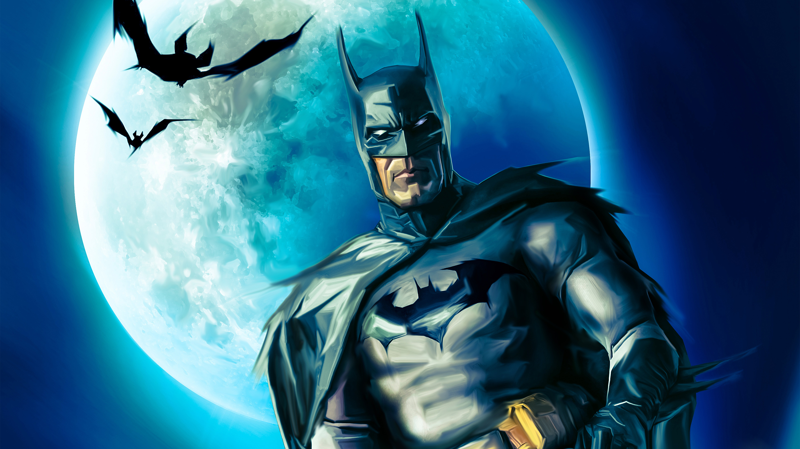
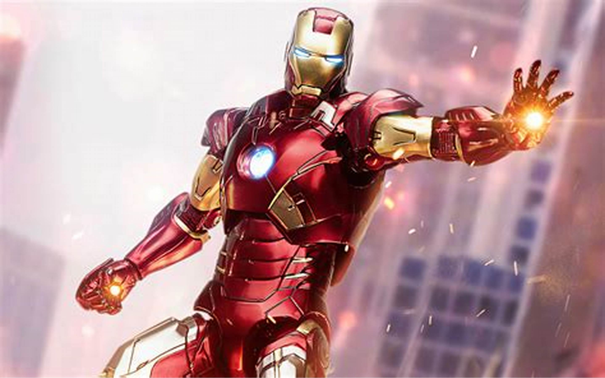
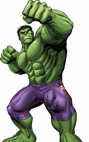

BATMAN
Batman is a superhero appearing in American comic books published by DC Comics. The character was created by artist Bob Kane and writer Bill Finger, and debuted in the 27th issue of the comic book Detective Comics on March 30, 1939. In the DC Universe continuity, Batman is the alias of Bruce Wayne, a wealthy American playboy, philanthropist, and industrialist who resides in Gotham City. Batman's origin story features him swearing vengeance against criminals after witnessing the murder of his parents Thomas and Martha as a child, a vendetta tempered with the ideal of justice. He trains himself physically and intellectually, crafts a bat-inspired persona, and monitors the Gotham streets at night. Kane, Finger, and other creators accompanied Batman with supporting characters, including his sidekicks Robin and Batgirl; allies Alfred Pennyworth, James Gordon, and Catwoman; and foes such as the Penguin, the Riddler, Two-Face, and his archenemy, the Joker.
IRON MAN
Iron Man is a superhero appearing in American comic books published by Marvel Comics. Co-created by writer and editor Stan Lee, developed by scripter Larry Lieber, and designed by artists Don Heck and Jack Kirby, the character first appeared in Tales of Suspense #39 in 1963, and received his own title with Iron Man in 1968. Shortly after his creation, Iron Man was a founding member of a superhero team, the Avengers, with Thor, Ant-Man, the Wasp, and the Hulk. Iron Man stories, individually and with the Avengers, have been published consistently since the character's creation. Iron Man is the superhero persona of Anthony Edward "Tony" Stark, a businessman and engineer
HULK
Hulk is a superhero appearing in American comic books published by Marvel Comics. Created by writer Stan Lee and artist Jack Kirby, the character first appeared in the debut issue of The Incredible Hulk (May 1962). In his comic book appearances, the character, who has dissociative identity disorder , is primarily represented by the alter ego Hulk, a green-skinned, hulking and muscular humanoid possessing a limitless degree of physical strength, and the alter ego Dr. Robert Bruce Banner, a physically weak, socially withdrawn, and emotionally reserved physicist, both of whom typically resent each other.
BLACK PANTHER

Black Panther is a 2018 American superhero film based on the Marvel Comics character of the same name. Produced by Marvel Studios and distributed by Walt Disney Studios Motion Pictures, it is the 18th film in the Marvel Cinematic Universe (MCU). The film was directed by Ryan Coogler, who co-wrote the screenplay with Joe Robert Cole, and it stars Chadwick Boseman as T'Challa / Black Panther alongside Michael B. Jordan, Lupita Nyong'o, Danai Gurira, Martin Freeman, Daniel Kaluuya, Letitia Wright, Winston Duke, Sterling K. Brown, Angela Bassett, Forest Whitaker, and Andy Serkis. In Black Panther, T'Challa is crowned king of Wakanda following his father's death, but he is challenged by Killmonger (Jordan), who plans to abandon the country's isolationist policies and begin a global revolution.
SPIDER MAN

Spider-Man is a superhero appearing in American comic books published by Marvel Comics. Created by writer-editor Stan Lee and artist Steve Ditko, he first appeared in the anthology comic book Amazing Fantasy #15 (July 31st 1962) in the Silver Age of Comic Books. He has been featured in comic books, television shows, films, video games, novels, and plays. Spider-Man's secret identity is Peter Benjamin Parker. Initially, Peter was depicted as a teenage high-school student and an orphan raised by his Aunt May and Uncle Ben in New York City after his parents Richard and Mary Parker died in a plane crash. Lee and Ditko had the character deal with the struggles of adolescence and financial issues and gave him many supporting characters, such as Flash Thompson, J. Jonah Jameson, and Harry Osborn; romantic interests Gwen Stacy, Mary Jane Watson, and the Black Cat; and enemies such as the Green Goblin, Doctor Octopus, and Venom.
DEADPOOL

Deadpool is a character appearing in American comic books published by Marvel Comics. Created by Fabian Nicieza and Rob Liefeld, the character first appeared in New Mutants #98 (December 1990). In his comic book appearances, Deadpool is initially depicted as a supervillain of the New Mutants and X-Force, though later stories would portray him as an antihero. Deadpool is the alter ego of Wade Wilson, a disfigured Canadian mercenary with superhuman regenerative healing abilities. He is known for his tendency to joke incessantly and break the fourth wall for humorous effect.
CAPTAIN AMERICA

Captain America is a superhero created by Joe Simon and Jack Kirby who appears in American comic books published by Marvel Comics. The character first appeared in Captain America Comics #1, published on December 20, 1940, by Timely Comics, a corporate predecessor to Marvel. Captain America's civilian identity is Steve Rogers, a frail man enhanced to the peak of human physical perfection by an experimental "super-soldier serum" after joining the United States Army to aid the country's efforts in World War II. Equipped with an American flag-inspired costume and a virtually indestructible shield, Captain America and his sidekick Bucky Barnes clashed frequently with the villainous Red Skull and other members of the Axis powers. In the final days of the war, an accident left Captain America frozen in a state of suspended animation until he was revived in modern times. He resumes his exploits as a costumed hero and becomes leader of the superhero team the Avengers, but frequently struggles as a "man out of time" to adjust to the new era.